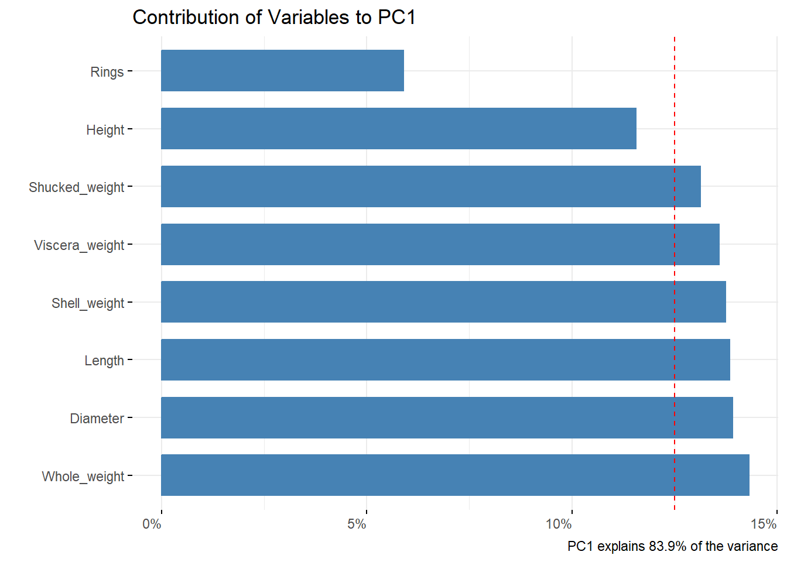
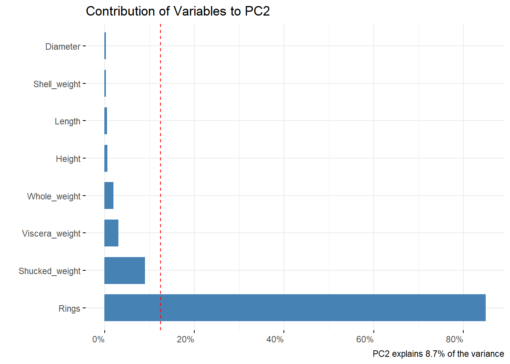

| Student | BasicStats | AdvancedStats |
|---|---|---|
| 1 | 4 | 11 |
| 2 | 8 | 4 |
| 3 | 13 | 5 |
| 4 | 7 | 14 |
| PC1 | PC2 | |
|---|---|---|
| Standard deviation | 1.270042 | 0.6220884 |
| Proportion of Variance | 0.806500 | 0.1935000 |
| Cumulative Proportion | 0.806500 | 1.0000000 |
Moving beyond the theoretical foundations of principal components, how is PCA applied to data? We offer two examples; the first a demonstration of the manual calculation of principal components, and the second implementing PCA on a large dataset using R.
In this illustration, we have access to the two grades of four students in a statistics subject. We aim to employ principal component analysis as a means to reduce the dimensionality from two variables to a singular variable. This transformation will effectively represent students’ performance in the subject with a more compact and interpretable measure. This example is adapted from the resource How to compute principal components [1].
| Scores | Basic Stats | Advanced Stats |
|---|---|---|
| Student 1 | 4 | 11 |
| Student 2 | 8 | 4 |
| Student 3 | 13 | 5 |
| Student 4 | 7 | 14 |
| Mean | \(\bar{x}\) = 8 | \(\bar{y}\) = 8.5 |
\[ \begin{bmatrix} \text{cov}(x,x) & \text{cov}(x,y) \\ \text{cov}(y,x) & \text{cov}(y,y) \\ \end{bmatrix} \]
\(\Rightarrow\) \(\text{cov}(x,x)\) = \(\text{var}(x)\) = \(\mathbf{E}\)(\(x^2\)) - \(\mathbf{E}\) \((x)^2\) = \[ \frac{(16+0+25+1)}{3}=14 \]
\(\Rightarrow\) \(\text{cov}(y,y)\) = \(\text{var}(y)\) = \(\mathbf{E}\)(\(y^2\)) - \(\mathbf{E}\) \((y)^2\) = \[ \frac{(6.25+20.25+12.25+30.25)}{3}=23 \]
\(\Rightarrow\) \(\text{cov}(x,y)\) = \(\text{cov}(y,x)\) = \(\mathbf{E}\)(\(xy\)) - \(\mathbf{E}\) (\(x\))\(\mathbf{E}\) (\(y\)) = \[ \frac{(-10+0-17.5-5.5)}{3}=-11 \]
\(\Rightarrow\) Covariance Matrix \(M\) \[ \begin{bmatrix} 14 & -11 \\ -11 & 23 \\ \end{bmatrix} \]
We can obtain the principal components and loadings from SVD of the covariance matrix M since covariance matrix M is a square matrix:
\[ \begin{bmatrix} 14 & -11 \\ -11 & 23 \\ \end{bmatrix} \times Any\ vector = \lambda \times Any\ vector\ ,\ (vector\neq 0) \]
\[det(M - \lambda I) = 0\]
\[ I = \begin{bmatrix} 1 & 0 \\ 0 & 1 \\ \end{bmatrix} \]
\[ \lambda I = \lambda \times \begin{bmatrix} 1 & 0 \\ 0 & 1 \\ \end{bmatrix} = \begin{bmatrix} \lambda & 0 \\ 0 & \lambda \\ \end{bmatrix} \]
\[ \begin{bmatrix} 14 & -11 \\ -11& 23 \\ \end{bmatrix} -\begin{bmatrix} \lambda & 0 \\ 0 & \lambda \\ \end{bmatrix} = \begin{bmatrix} 14-\lambda & -11 \\ -11 & 23-\lambda \\ \end{bmatrix} \]
\(\Rightarrow\)
\[ det\begin{bmatrix} 14-\lambda & -11 \\ -11& 23-\lambda \\ \end{bmatrix}=0 \]
\(\Rightarrow\) \[(14-\lambda)(23-\lambda) - (-11)(-11) = 0 \]
\[\lambda^2 +37\lambda -201 = 0\]
\(\Rightarrow\) \(\lambda_1\) = 30.3849, \(\lambda_2\) = 6.6152 (eigenvalues for Covariance Matrix \(M\))
\[(M - \lambda_1I)\times U_1 = \mathbf{0} \]
\(\Rightarrow\) \[\begin{bmatrix} 14-\lambda & -11 \\ -11& 23-\lambda \\ \end{bmatrix}\times\begin{bmatrix} u_1 \\ u_2 \\ \end{bmatrix}=\mathbf{0} \]
\[(14- \lambda)u_1 - 11u_2 = 0 \] \(\Rightarrow\) \[-16.3849u_1 -11u_2 = 0\] \(\Rightarrow\) \[-16.3849u_1= 11u_2 \] \(\Rightarrow\) \[u_1 = \frac{11}{-16.3849}u_2\]
\[ \begin{bmatrix} u_1 \\ u_2 \\ \end{bmatrix}= u_2\begin{bmatrix} \frac{11}{-16.3849}\\ 1 \\ \end{bmatrix} \]
\(\Rightarrow\) \[u_2\begin{bmatrix} -11\\ 16.3849 \end{bmatrix}\]
\[ \begin{bmatrix} 16.3849 & 11 \\ \end{bmatrix} \times \begin{bmatrix} u_1 \\ u_2 \end{bmatrix} = \begin{bmatrix} 11 \\ -16.3849 \end{bmatrix} \]
Normalized Eigenvector
\(\Rightarrow\) \(\lambda_1\): \(e_1\)
\[ \frac{1}{\sqrt{{11^2 +16.3849^2}}}\begin{bmatrix} 11 \\ -16.3849 \end{bmatrix}= \begin{bmatrix} 0.5574 \\ -0.8303 \end{bmatrix} \]
\(\Rightarrow\) \(\lambda_2\) \(e_2\) (Right singular vector) =
\[ \begin{bmatrix} 0.8303 \\ 0.5574 \end{bmatrix} \]
First Principal Component (PC1)
\[ P_{11} = e_1^T \times \begin{bmatrix} 4-mean(x) \\ 11 -mean(y) \end{bmatrix} = \begin{bmatrix} 0.5574 & -0.8303 \\ \end{bmatrix} \begin{bmatrix} 4-8 \\ 11-8.5 \end{bmatrix} =-4.3052 \]
\[ P_{12} = e_1^T \times \begin{bmatrix} 8-mean(x) \\ 4 -mean(y) \end{bmatrix} = \begin{bmatrix} 0.5574 & -0.8303 \\ \end{bmatrix} \begin{bmatrix} 8-8 \\ 4-8.5 \end{bmatrix} =3.7361 \]
\[ P_{13} = e_1^T \times \begin{bmatrix} 13-mean(x) \\ 5 -mean(y) \end{bmatrix} = \begin{bmatrix} 0.5574 & -0.8303 \\ \end{bmatrix} \begin{bmatrix} 13-8 \\ 5-8.5 \end{bmatrix}= 5.6928 \]
\[ P_{14}= e_1^T \times \begin{bmatrix} 7-mean(x) \\ 14 -mean(y) \end{bmatrix} = \begin{bmatrix} 0.5574 & -0.8303 \\ \end{bmatrix} \begin{bmatrix} 7-8 \\ 14-8.5 \end{bmatrix} = -5.1238 \]
The new dataset (Left singular vector)
| Student 1 | Student 2 | Student 3 | Student 4 | |
|---|---|---|---|---|
| PC1 | -4.3052 | 3.7361 | 5.6928 | -5.1238 |
| Student | BasicStats | AdvancedStats |
|---|---|---|
| 1 | 4 | 11 |
| 2 | 8 | 4 |
| 3 | 13 | 5 |
| 4 | 7 | 14 |
| PC1 | PC2 | |
|---|---|---|
| Standard deviation | 1.270042 | 0.6220884 |
| Proportion of Variance | 0.806500 | 0.1935000 |
| Cumulative Proportion | 0.806500 | 1.0000000 |
The first principal component of the data captures 80.7% of the variation (or information) while reducing the dimensionality of the dataset from 2 variables to 1. Small datasets such as this make the hand-calculation of principal components feasible and easy to follow, but the strengths of PCA are especially evident when software is used to enable principal component analysis for large datasets. In the next example, we demonstrate how PCA can be used with a large dataset using the R programming language.
For this application of PCA, the Abalone dataset from the UCI Machine Learning Repository is used [2]. This dataset contain 4177 observations of 9 variables which record characteristics of each abalone including sex, length, diameter, height, weights, and the number of rings. The variables, apart from sex, are continuous and correlated making the dataset an ideal candidate for demonstrating dimensionality reduction via PCA.
First, the appropriate and necessary libraries are loaded in R. These provide the functions which serve as the backbone of the analysis, handling the computational aspects of PCA as well as visualizing the results.
# Load necessary libraries
library(tidyverse) # for handling missing values
library(corrplot) # for plotting the correlation matrix
library(factoextra) # PCA plots
library(summarytools) #produces summary statsThe dataset contains 9 variables with 1 categorical variable and 8 numeric variables. The dataset contains no missing values. For this example in applying principal component analysis, we exclude the categorical variable ‘Sex’ and focus the PCA on the numerical dimensions of the Abalone. For analyses involving a mix of numeric and non-numeric variables other factor analysis techniques can be used, such as factor analysis of mixed data [3].
# Load dataset
abalone <- read.csv('./abalone/abalone.csv')
data_desc = descr(abalone, plain.ascii = FALSE, headings = FALSE) # descriptive statistics for the dataset
data_desc %>%
kbl(align= 'l') %>%
kable_paper("hover")| Diameter | Height | Length | Rings | Shell_weight | Shucked_weight | Viscera_weight | Whole_weight | |
|---|---|---|---|---|---|---|---|---|
| Mean | 0.4078813 | 0.1395164 | 0.5239921 | 9.9336845 | 0.2388309 | 0.3593675 | 0.1805936 | 0.8287422 |
| Std.Dev | 0.0992399 | 0.0418271 | 0.1200929 | 3.2241690 | 0.1392027 | 0.2219629 | 0.1096143 | 0.4903890 |
| Min | 0.0550000 | 0.0000000 | 0.0750000 | 1.0000000 | 0.0015000 | 0.0010000 | 0.0005000 | 0.0020000 |
| Q1 | 0.3500000 | 0.1150000 | 0.4500000 | 8.0000000 | 0.1300000 | 0.1860000 | 0.0935000 | 0.4415000 |
| Median | 0.4250000 | 0.1400000 | 0.5450000 | 9.0000000 | 0.2340000 | 0.3360000 | 0.1710000 | 0.7995000 |
| Q3 | 0.4800000 | 0.1650000 | 0.6150000 | 11.0000000 | 0.3290000 | 0.5020000 | 0.2530000 | 1.1530000 |
| Max | 0.6500000 | 1.1300000 | 0.8150000 | 29.0000000 | 1.0050000 | 1.4880000 | 0.7600000 | 2.8255000 |
| MAD | 0.0963690 | 0.0370650 | 0.1186080 | 2.9652000 | 0.1475187 | 0.2349921 | 0.1178667 | 0.5285469 |
| IQR | 0.1300000 | 0.0500000 | 0.1650000 | 3.0000000 | 0.1990000 | 0.3160000 | 0.1595000 | 0.7115000 |
| CV | 0.2433058 | 0.2998003 | 0.2291884 | 0.3245693 | 0.5828504 | 0.6176489 | 0.6069664 | 0.5917269 |
| Skewness | -0.6087607 | 3.1265706 | -0.6394138 | 1.1133019 | 0.6204809 | 0.7185815 | 0.5914271 | 0.5305773 |
| SE.Skewness | 0.0378868 | 0.0378868 | 0.0378868 | 0.0378868 | 0.0378868 | 0.0378868 | 0.0378868 | 0.0378868 |
| Kurtosis | -0.0482711 | 75.8953091 | 0.0616411 | 2.3239123 | 0.5281636 | 0.5912553 | 0.0809994 | -0.0264756 |
| N.Valid | 4177.0000000 | 4177.0000000 | 4177.0000000 | 4177.0000000 | 4177.0000000 | 4177.0000000 | 4177.0000000 | 4177.0000000 |
| Pct.Valid | 100.0000000 | 100.0000000 | 100.0000000 | 100.0000000 | 100.0000000 | 100.0000000 | 100.0000000 | 100.0000000 |
The summary statistics show the differences in measurement between variables, with some variables such as diameter and viscera weight having small ranges and others, namely rings, having relatively large ranges. For this reason, scaling of the variables is a crucial step in PCA to ensure results accurately capture the variance in the data.
Standardization ensures all variables, also called features, are on the same scale, and the scale function allows us to center the data to a mean of 0 and variance of 1. This ensures no single feature has an outsized effect during the principal component analysis.
# Select only the numeric variables
abalone = select_if(abalone, is.numeric)
# Standardization of numerical features
abalone_sc <- scale(abalone, center = TRUE, scale = TRUE)
sc_sum = summary(abalone_sc)
kbl(sc_sum, align= 'l') %>%
kable_paper("hover")| Length | Diameter | Height | Whole_weight | Shucked_weight | Viscera_weight | Shell_weight | Rings | |
|---|---|---|---|---|---|---|---|---|
| Min. :-3.7387 | Min. :-3.5558 | Min. :-3.33555 | Min. :-1.68589 | Min. :-1.6145 | Min. :-1.64298 | Min. :-1.7049 | Min. :-2.7708 | |
| 1st Qu.:-0.6161 | 1st Qu.:-0.5832 | 1st Qu.:-0.58614 | 1st Qu.:-0.78966 | 1st Qu.:-0.7811 | 1st Qu.:-0.79455 | 1st Qu.:-0.7818 | 1st Qu.:-0.5997 | |
| Median : 0.1749 | Median : 0.1725 | Median : 0.01156 | Median :-0.05963 | Median :-0.1053 | Median :-0.08752 | Median :-0.0347 | Median :-0.2896 | |
| Mean : 0.0000 | Mean : 0.0000 | Mean : 0.00000 | Mean : 0.00000 | Mean : 0.0000 | Mean : 0.00000 | Mean : 0.0000 | Mean : 0.0000 | |
| 3rd Qu.: 0.7578 | 3rd Qu.: 0.7267 | 3rd Qu.: 0.60926 | 3rd Qu.: 0.66123 | 3rd Qu.: 0.6426 | 3rd Qu.: 0.66056 | 3rd Qu.: 0.6478 | 3rd Qu.: 0.3307 | |
| Max. : 2.4232 | Max. : 2.4397 | Max. :23.68045 | Max. : 4.07178 | Max. : 5.0848 | Max. : 5.28587 | Max. : 5.5040 | Max. : 5.9136 |
Viewing the data after scaling and centering, values greater than 3 or less than -3 represent outliers more than 3 standard deviations from the mean. Based on the ranges of the variables, we should view a boxplot of the data to further investigate.
# Plot a boxplot to visualize potential outliers
par(mar=c(4, 8, 4, 4))
boxplot(abalone_sc, col = "steelblue", main = "Visualization of scaled and centered data", horizontal = TRUE, las = 1)Are there enough outliers to be a cause for concern? We can see how many lie outside of the third standard deviation of the data for each variable.
outs = colSums(abalone_sc > 3 | abalone_sc < -3)
kbl(outs, col.names = ('Outliers'), align = 'l') %>%
kable_paper("hover")| Outliers | |
|---|---|
| Length | 15 |
| Diameter | 13 |
| Height | 5 |
| Whole_weight | 19 |
| Shucked_weight | 37 |
| Viscera_weight | 22 |
| Shell_weight | 27 |
| Rings | 62 |
Of the 4177 observations, at most 62 in a single variable (Rings) are outliers. The tolerance for outliers will differ depending on the investigation, but for our illustrative purposes this number is well within tolerance for principal component analysis.
Lastly, we can investigate the correlation among the variables. PCA is best used with linearly correlated data. If the data is not correlated, the results of PCA will be less meaningful.
# Calculate correlations and round to 2 digits
abalone_corr <- cor(abalone_sc)
corrplot(abalone_corr, method="number")Our scaled and centered data has strong linear correlations and contains a relatively small number of outliers. We can now calculate the principal components of the dataset.
The prcomp() function [4] performs principal component analysis on a dataset using the singular value decomposition method, which utilizes the covariance matrix of the data.
# Apply PCA using prcomp()
abalone_pca <- prcomp(abalone_sc)
sum_pca = as.data.frame(summary(abalone_pca)$importance)
kbl(sum_pca, align= 'l', caption = "Importance of components") %>%
kable_paper("hover")| PC1 | PC2 | PC3 | PC4 | PC5 | PC6 | PC7 | PC8 | |
|---|---|---|---|---|---|---|---|---|
| Standard deviation | 2.590838 | 0.8340342 | 0.508373 | 0.4074185 | 0.2914613 | 0.251938 | 0.1126684 | 0.0799895 |
| Proportion of Variance | 0.839050 | 0.0869500 | 0.032310 | 0.0207500 | 0.0106200 | 0.007930 | 0.0015900 | 0.0008000 |
| Cumulative Proportion | 0.839050 | 0.9260100 | 0.958310 | 0.9790600 | 0.9896800 | 0.997610 | 0.9992000 | 1.0000000 |
# Principal Component scores vector
pc_scores <- abalone_pca$x
# Std Deviation of Components
component_sdev <- abalone_pca$sdev
# Eigenvector or Loadings
eigenvector <- abalone_pca$rotation
# Mean of variables
component_mean <- abalone_pca$center
# Scaling factor of Variables
component_scale <- abalone_pca$scale
# Proportion of variance explained by each PC
variance_explained <- component_sdev^2 / sum(component_sdev^2)
# Cumulative proportion of variance explained
cumulative_variance_explained <- cumsum(variance_explained)
# Retain components that explain a percentage of the variance
num_components <- which(cumulative_variance_explained >= 0.92)[1]
# Select the desired number of principal components
selected_pcs <- pc_scores[, 1:num_components]The first 2 principal components alone explain 92% of the variance in the data.
The loading are the weights assigned to each variable for that particular principal component.
# Access the loadings for the first two principal components
loadings_first_two_components <- eigenvector[, 1:2]
# Print the loadings for the first two principal components
kbl(loadings_first_two_components, align= 'l', caption = "Loadings for the first two principal components") %>%
kable_paper("hover")| PC1 | PC2 | |
|---|---|---|
| Length | 0.3721385 | 0.0682827 |
| Diameter | 0.3730941 | 0.0400480 |
| Height | 0.3400268 | -0.0704631 |
| Whole_weight | 0.3783075 | 0.1373462 |
| Shucked_weight | 0.3624545 | 0.2988399 |
| Viscera_weight | 0.3685578 | 0.1729785 |
| Shell_weight | 0.3707578 | -0.0454004 |
| Rings | 0.2427128 | -0.9212039 |
The values in abalone_pca$x are the coordinates of each observation in the new principal component space. These coordinates are the scores for each observation along each principal component. The eigenvectors of the covariance or correlation matrix of the data represent the directions of maximum variance in the dataset.
fviz_eig(abalone_pca, addlabels = TRUE)The scree plot visualizes the variance captured by each PC. PC1 explains 83.9% of the variance, and PC2 explains 8.7% variance.
The correlation between a variable and a principal component is used as the coordinates of the variable on the PC, shown as dimensions on the biplot. Dim1 corresponds to PC1, and Dim2 to PC2. The representation of variables differs from the plot of the observations: The observations are represented by their projections, but the variables are represented by their correlations [5].
fviz_pca_biplot(abalone_pca, label = "var", alpha.ind = "contrib", col.var = "blue", repel = TRUE)
Top variable contribution for the first two principal components.
# Contributions of variables to PC1
pc2_contribution <- fviz_contrib(abalone_pca, choice = "var", axes = 1, top = 20)
# Modify the theme to rotate X-axis labels to 90 degrees
pc2_contribution +
theme(
axis.text.x = element_text(angle = 0),
plot.title = element_text(hjust = 0) # horizontal justification
) +
coord_flip() +
labs(title = "Contribution of Variables to PC1",
y = "Percentage Contribution",
x = "",
caption = "PC1 explains 83.9% of the variance") +
scale_y_continuous(labels = scales::percent_format(scale = 1,
accuracy = 1))
# Contributions of variables to PC2
pc2_contribution <- fviz_contrib(abalone_pca, choice = "var", axes = 2, top = 12)
# Modify the theme to rotate X-axis labels to 90 degrees
pc2_contribution +
theme(
axis.text.x = element_text(angle = 0),
plot.title = element_text(hjust = 0) # horizontal justification
) +
coord_flip() +
labs(title = "Contribution of Variables to PC2",
y = "Percentage Contribution",
x = "",
caption = "PC2 explains 8.7% of the variance") +
scale_y_continuous(labels = scales::percent_format(scale = 1,
accuracy = 1))
The first principal component captures 83.9% of the variance in the data. This linear combination has relatively equal loadings for whole weight, diameter, length, shell weight, viscera weight, and shucked weight, with height and rings having lower loadings. The second principal component is mostly influenced by the variable rings which makes up over 80% of the contribution to PC2. The biplot is an effective visualization of how each variable contributes to PC1, or dimension 1 on the graph, and PC2, or dimension 2 on the graph. The length and direction of each vector represent the contribution of each variable to the principal components; whole weight and rings are the longest, representing the largest contributions to PC1 and PC2 respectively.
PCA is primarily an exploratory tool, which allows us to visualize high-dimensional data in lower dimensions as shown above in the biplot and accompanying scree plot. These PCs can be used to explore data in other ways, such as looking for trends and patterns in the data or identifying clusters and outliers. In the formal analysis in the following chapter, the applications of PCA are further explored through the development of a regression model on the principal components of a dataset.